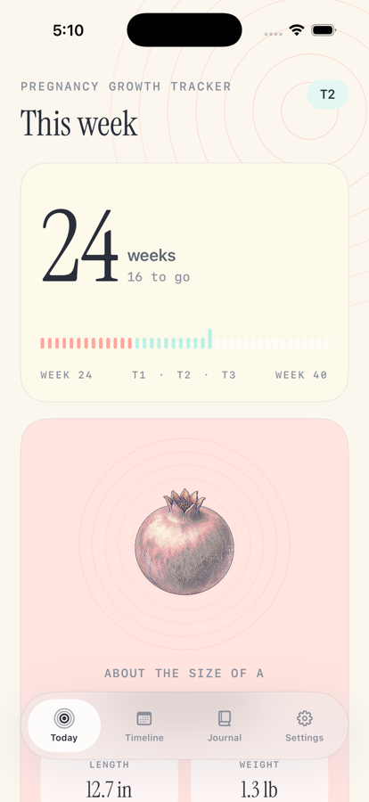
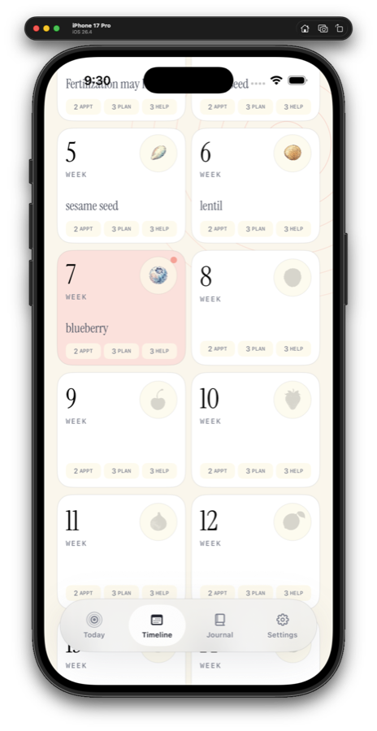
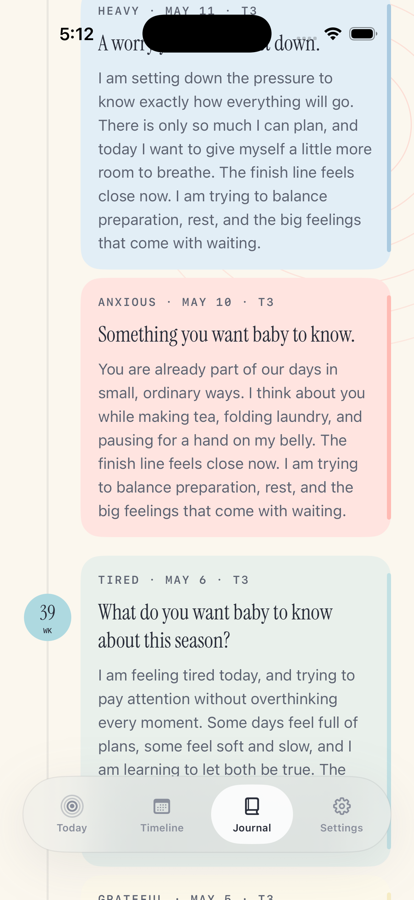

Use Settings to enter or update the due date. The app uses it to estimate the current pregnancy week, trimester, and weeks remaining.
Pregnancy Growth Tracker Support
Help, basics, and contact information
Help for following pregnancy week by week.
Pregnancy Growth Tracker is built for calm weekly context, private journaling, and practical preparation. This page covers the basics and how to reach us.
Quick guide
Using Pregnancy Growth Tracker
The Today tab shows the current week, growth comparison, approximate size, development notes, things you may notice, and planning prompts.
Use the Timeline tab to look across the 40-week path and open week detail screens for development, appointments, planning, and local help prompts.
Provider and class links open searches based on common needs for that stage. Availability, insurance, and medical fit vary by location.
Use the Journal tab to choose a mood, answer prompts, and keep entries on your device. The app does not require an account or cloud sync.
The app provides general pregnancy information only. Contact your care team for medical questions, symptoms, appointments, or urgent concerns.
Visual guide
Today, planning, and journal
These screens show the core flow: check the current week, review preparation prompts, and save private notes.



Troubleshooting
Things to try first
Open Settings and confirm the due date. If your clinician changes the due date, updating it in the app will update the timeline estimate.
Pregnancy growth varies and app estimates are approximate. Use your care team's measurements and guidance as the source of truth.
Entries are stored locally on the device. The app does not use an account, backend sync, analytics, or cloud journal storage.
Contact
Still need help?
Email info@bigpantsapps.com and include your device model, iOS version, app version if available, and a short description of what happened.
For medical questions, symptoms, test results, appointments, or urgent concerns, contact your care team directly.
For privacy details, read the Pregnancy Growth Tracker privacy policy.